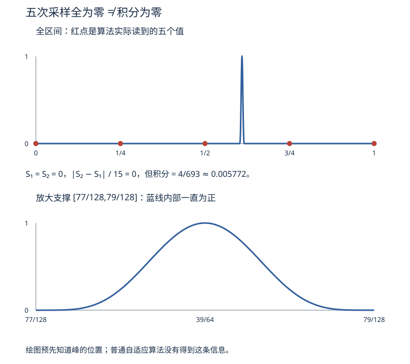

本页目录
数值 IV · 数值积分与 ODE 数值解
积分与微分方程即使没有方便的解析表达式，也可以数值求解。难点随之变成：怎样判断步数够不够，怎样发现误差估计漏掉的信息，以及怎样避免把方程本来衰减的解算成爆炸的数列。本页把这三件事分开检查。
学习层：先检查误差依据，再判断步数够不够
1. 一个实验，两种模式
实验台有“求积”和“稳定性”两个页签。求积固定区间 \([0,1]\)，比较同一组节点上的 复合梯形、复合 Simpson 与自适应 Simpson 对照算法；稳定性固定试验方程
先回答预测门，提交前不显示曲线、数值或答案账本。页签、函数、步数改变时，当前预测会重新上锁。实验没有随机抽样；求积算法确实会在有限节点上采样函数。更换预测答案也会隐藏结果，直到再次提交。
2. 求积：光滑不等于已分辨
先看两个被积函数
它们都在 \([0,1]\) 上光滑，但第二个函数的有效变化尺度很窄。两个解析积分分别是
复合梯形在 \(N\) 个等宽小区间上使用 \(h=1/N\)：
复合 Simpson 使用 偶数 \(N\)：
这里的 \(O(h^4)\) 不是只要“函数看起来平滑”就自动成立：需要 \(N\) 为偶数，并且至少有足够的四阶光滑性（例如 \(f\in C^4[0,1]\)，四阶导数有界）。窄峰在节点之间时，固定规则可能同时错过峰高；自适应 Simpson 对照算法用局部误差估计细分，但估计器可能看不到所有局部特征。解析积分是数学上的真值表达式；实验用独立的高精度数值参考近似它，误差读数仍不是严格区间界。
静态 fallback：求积账本。 关闭 JavaScript 时，先用上面的两个解析值作真误差基准；取 \(N=8\)，逐项计算端点、奇偶内点和误差。自适应 Simpson 的数值只作为算法对照。对 smooth，\(S_N\) 应比 \(T_N\) 更快下降；对 peak，先检查峰的位置 \(x=0.65\) 是否被网格分辨，再谈阶数。
| 对象 | 解析真值 | trapezoid 的账 | Simpson 的账 | 适用边界 |
|---|---|---|---|---|
| \(f_{\rm smooth}\) | \(\sin(1)+1/3\approx1.1748043181\) | 端点半权，预期 \(O(h^2)\) | \(N\) 偶数，预期 \(O(h^4)\) | \(C^2\) / \(C^4\) 光滑性分别支撑相应阶 |
| \(f_{\rm peak}\) | \([\arctan(7)+\arctan(13)]/20\) | 可能低估窄峰 | 也可能低估窄峰 | 先分辨峰宽，不能从一张图宣称渐近阶 |
| adaptive Simpson 对照 | 递归 Simpson 误差估计 | 记录函数调用次数 | 记录容差与最大递归深度 | 解析积分给真误差；容差、深度和浮点误差仍是数值条件 |
3. 光滑窄峰能让估计器误报“零误差”
令 \(c=39/64\)、\(w=1/128\)，定义
在支撑端点，函数及前四阶导数都接到零，所以 \(b\in C^4\)；这不是靠不连续制造的反例。换元并展开多项式可得
普通自适应 Simpson 初次读取 \(0,1/4,1/2,3/4,1\)。它们都在支撑 \([77/128,79/128]\) 外，于是粗、细两次 Simpson 值都是零，内部误差估计 \(|S_{\rm fine}-S_{\rm coarse}|/15\) 也为零。把容差再缩小一万倍，仍不会让这五个零暴露出窄峰。

实验的第三个预设正是这个反例。“已知支撑分段”一行先给出支撑端点，再分别积分三段；算法因此能在中间段读到峰顶。它比普通算法多用了先验信息。蓝色绘图曲线也特意在峰内部取点，不能把绘图的分辨率当成求积器实际获得的信息；下方短线才是求积器的真实探针。
手算还可以检查网格错位：\(N=32\) 时全部均匀节点漏峰，\(T_{32}=S_{32}=0\)；\(N=64\) 时只有第 \(39\) 个节点取到峰顶，故 \(T_{64}=1/64\)、\(S_{64}=1/48\)，二者又都偏大。光滑性保证的是适当误差界和渐近阶，不保证每次加倍节点都立刻改善结果。
4. ODE：四个放大因子，三个不同问题
令 \(z=\lambda h\)。对试验方程，一步更新都有形式 \(y_{n+1}=G(z)y_n\)：
| 方法 | \(G(z)\) | 局部截断误差 | 全局误差 | 负实轴上的有界区 \(\lvert G\rvert\le1\) |
|---|---|---|---|---|
| Euler | \(1-z\) | \(O(h^2)\) | \(O(h)\) | \(0\le z\le2\) |
| Heun | \(1-z+z^2/2\) | \(O(h^3)\) | \(O(h^2)\) | \(0\le z\le2\) |
| RK4 | \(1-z+z^2/2-z^3/6+z^4/24\) | \(O(h^5)\) | \(O(h^4)\) | 约 \(0\le z\le2.785\) |
| 隐式 Euler | \(1/(1+z)\) | \(O(h^2)\) | \(O(h)\) | 所有 \(z\ge0\) |
本页“局部截断误差”指从精确初值出发的一步缺陷，没有除以 \(h\)；有的教材把除以 \(h\) 的量称作局部截断误差，阶数会少一。“全局阶”描述固定终点、步长趋于零时累计误差；“绝对稳定”只问误差是否被 \(|G(z)|\) 放大。在 \(|G|<1\) 时，数值模态随步数衰减；\(|G|=1\) 只保持幅值。特别是 Euler 的 \(z=2\) 给出 \((-1)^n\)，它有界却永不衰减。Euler 还有一个容易被稳定区遮住的反例：当 \(1<z<2\) 时它仍绝对稳定，但 \(G(z)<0\)，数值解会交替变号；真解 \(e^{-\lambda t}\) 始终为正。取 \(\lambda=20\)、\(h=0.0625\)，\(z=1.25\)，第一步就得到 \(y_1=-0.25\)。若 \(z>2\)，才进入绝对不稳定并逐步爆炸。
静态 fallback：ODE 账本。 取 \(\lambda=20\)、\(T=0.5\)、\(N=8\)，所以 \(h=0.0625,z=1.25\)。先列一行放大因子，再列终点和精确解；不要只看终点，因为 Euler 的越界发生在第一步。
| 方法 | 一步 \(G(1.25)\) | 终点公式 | 要读出的证书 |
|---|---|---|---|
| Euler | \(-0.25\) | \((-0.25)^8\) | 首步越界；仍在 \(\lvert G\rvert<1\) 的稳定区 |
| Heun | \(0.53125\) | \((0.53125)^8\) | 无符号翻转，二阶全局误差 |
| RK4 | \(1-1.25+1.25^2/2-1.25^3/6+1.25^4/24\) | \(G(1.25)^8\) | 四阶全局误差，但不是任意步长稳定 |
| 隐式 Euler | \(4/9\) | \((4/9)^8\) | 保正且衰减，但仍只是一阶方法 |
| 解析解 | \(e^{-1.25}\) | \(e^{-\lambda T}=e^{-10}\) | 连续方程的正性与衰减基准 |
5. 边界、反例与迁移
- Simpson 的 \(N\) 不是任意正整数；奇数子区间不能静默套用交错权重。函数四阶导数不受控、节点没有分辨窄峰时，也不能把观察到的 \(h^4\) 当作证书。
- 自适应 Simpson 是“在给定容差和递归深度下的算法对照”，不是精确积分器；本页用解析表达式的高精度参考估算误差。即使对 \(C^4\) 函数，它也可能漏掉未采到的窄峰。资源上限、浮点中点无法再细分，会单独报告，不与估计准则通过混在一起。
- Euler 的 \(|G|<1\) 只说明试验方程上的绝对稳定，不说明单调性、正性或一般非线性 ODE 的可靠性。\(1<z<2\) 的变号是一个最小反例。
- 刚性问题中，快模态把显式方法的 \(h\) 上限压得很小；隐式方法的稳定区更大，但每一步要解方程，不能只凭“无条件稳定”忽略精度、非线性求解和问题条件数。
- 迁移到扩散采样器、神经 ODE 或 PDE 时，先写出实际线性化的 \(G\)、局部误差来源和状态变量的尺度，再把本页的阶数/稳定性证书搬过去。
无 JavaScript 时的静态读法：求积模式固定 \([0,1]\)、\(N=8\)，手算上表的宽缓函数、窄峰，并验证紧支撑反例的五次求值；ODE 模式固定 \(\lambda=20,T=0.5,N=8\)。预测门的问题只要求判断条件，不要求先算出小数。交互显示的每一行都包含输入、方法、结果、误差、阶/稳定性说明和边界状态；SVG 曲线只画有限采样点，不能替代解析证书。
1. 数值积分（求积公式）
思想：\(\int_a^b f \approx \sum w_i f(x_i)\)——插值型求积 = 对被积函数插值再精确积分（上一页的直接应用）。代数精度 = 能精确积分的多项式最高次数（衡量公式好坏的标尺）。
两个基本公式与复合版：下表用 \(H\) 表示一个完整面板的宽度。Simpson 面板由两个小区间组成，因此 \(H=2h\)；复合公式中的 \(h=(b-a)/N\) 仍是相邻节点距离。
| 公式 | 形式 | 代数精度 | 复合误差阶 |
|---|---|---|---|
| 梯形 | \(\frac{H}{2}(f_0 + f_1)\) | 1 | \(O(h^2)\) |
| Simpson | \(\frac{H}{6}(f_0 + 4f_{1/2} + f_1)\) | 3（白赚一阶：对称抵消） | \(O(h^4)\) |
例如在 \([a,b]\) 上，有足够光滑性时，
第二式要求 \(N\) 偶数、\(f\in C^4[a,b]\)。可从每个 Simpson 面板的误差 \(-H^5 f^{(4)}(\xi)/2880\) 相加得到：面板数是 \((b-a)/(2h)\)，代入 \(H=2h\) 正好留下分母 \(180\)。窄峰的四阶导数尺度含 \(w^{-4}\)；“属于 \(C^4\)”并不意味着这个常数很小。
自适应估计中的 \(15\) 也有来源：若一个面板细分前后的误差主项满足 \(I-S_{\rm coarse}\approx16C\)、\(I-S_{\rm fine}\approx C\)，则 \(C\approx(S_{\rm fine}-S_{\rm coarse})/15\)。修正值为 \(S_{\rm fine}+(S_{\rm fine}-S_{\rm coarse})/15\)。这段推理依赖两次规则已看见同一误差主项；窄峰反例恰好破坏这一条件。内部估计也不直接等于修正后结果的严格误差上界。
Romberg 加速（Richardson 外推）：在同一嵌套的均匀网格上，在足够光滑性支持的误差展开中，已知 \(T(h)-I=c h^2 + O(h^4)\)，用两个步长的结果解出并消去 \(c h^2\) 项：\(T^* = \frac{4T(h/2) - T(h)}{3}\)。对复合梯形的首级，这与同一嵌套均匀网格上的复合 Simpson 结果等价；若两个 \(T\) 来自不嵌套或不均匀的网格，不能直接叫作 Simpson。更高阶外推需要相应更高阶误差展开；不能无限外推而不检查光滑性、舍入误差与节点是否分辨特征。"知道误差的形状，就能把它外推掉"——这个思想通用（数值微分、ODE 步长控制同款）。
Gauss 求积：取有限区间上的正权函数 \(\omega\)，假设所需矩存在且多项式内积非退化。\(n\) 次正交多项式的 \(n\) 个零点作为节点，能精确积分次数不超过 \(2n-1\) 的多项式；单位权对应 Gauss–Legendre。证明的关键是将任意这样的多项式写成 \(p=q\,p_n+r\)，其中 \(\deg q,\deg r\le n-1\)：第一项因正交性积分为零，在节点处也为零，剩下 \(r\) 由插值求积精确积分。代数精度是多项式恒等式，不需要对一个任意被积函数另加 \(C^{2n}\) 条件。 对一般函数估计余项时，才另外引入相应正则性。
高维的诅咒与出路：网格法代价 \(O(N^d)\) 随维数指数爆炸 ⇒ 在方差有限等条件下，Monte Carlo 的抽样误差量级 \(O(1/\sqrt n)\) 的指数形式不显含 \(d\)；但常数、被积函数方差、有效采样和混合难度都可能随维数严重恶化，所以它是可扩展的基线，不是无条件“与维数无关”或唯一可行方案。
2. ODE 数值解：初值问题 \(y' = f(t, y),\ y(t_0) = y_0\)
Euler 法（切线小步走，数分 II 线性化第三次上岗）：
局部截断误差 \(O(h^2)\)、整体误差 \(O(h)\)（一阶）——粗但结构是一切方法的母体。
改进思路：在一步内多测几次斜率再加权——Runge–Kutta 家族：
- 改进 Euler / Heun（二阶）：先 Euler 预测终点，再用两端斜率平均校正——\(O(h^2)\)，每步 2 次 \(f\) 求值；
- 经典 RK4（四阶）：四次斜率采样 \(k_1..k_4\) 加权 \(\frac{h}{6}(k_1 + 2k_2 + 2k_3 + k_4)\)——\(O(h^4)\)，"精度性价比"的历史标杆，手算/教学/中等精度实务的默认选择；
- 自适应步长（RK45 等）：两个阶数的差估计误差，动态调 \(h\)——
scipy.integrate.solve_ivp默认方法为 RK45：五阶推进、四阶嵌入估计，不是固定步长经典 RK4。
从局部误差到全局误差。 设 \(f\) 对 \(y\) 在所考察邻域内以常数 \(L\) Lipschitz，精确解足够光滑，数值轨迹留在该邻域；固定终点 \(T\)（此处 \(t_0=0\)）。Euler 的误差递推满足
由精确初值 \(e_0=0\) 迭代，
\(L=0\) 时直接用 \(CTh\)。这才解释了“一步 \(O(h^2)\)、总体 \(O(h)\)”；更一般的 \(p\) 阶方法需要相应一步稳定性与 \(O(h^{p+1})\) 缺陷。固定时间区间、常数受控，是推导的一部分。
稳定性与刚性。 改用复数试验方程 \(y'=\mu y\)、\(\operatorname{Re}\mu<0\)，记 \(\zeta=h\mu\)（与实验中正的 \(z=\lambda h\) 区分）。显式 Euler 的放大因子为 \(R(\zeta)=1+\zeta\)；负实轴上要求 \(h|\mu|<2\) 才衰减。多尺度系统中，快模态可能迫使显式步长远小于慢变化部分的精度要求，这是刚性的典型表现。
隐式 Euler 每步求解 \(y_{n+1}=y_n+h f(t_{n+1},y_{n+1})\)。对线性试验方程，
所以它 A-稳定：整个左半平面都在有界稳定区；并且 \(R(\zeta)\to0\) 当 \(|\zeta|\to\infty\)，还具有 L-稳定性，会压低极快的衰减模态。这只解除线性试验方程的步长稳定性障碍。精度、非线性方程能否可靠求解、守恒或正性等额外结构，仍可能限制步长。
🔗 AI 衔接：某些确定性扩散采样器求解概率流 ODE，可以借助本页的步长、阶数和稳定性观念；另一些算法求解 SDE 或加入随机校正，不能全归入 ODE。神经 ODE 将向量场参数化，训练还要选择对离散求解过程求导或连续伴随等策略；前向数值误差和梯度误差都应检查。模型误差、离散误差与感知指标也不相同。
3. 典型例题
例 1（Simpson 手算） \(\int_0^1 e^{-x^2}dx\)（无初等原函数——数分 III 的名例）：取 \(N=4\) 个子区间，所以 \(h=(1-0)/4=0.25\)。复合 Simpson 给 \(\frac{h}{3}[f(0)+4f(0.25)+2f(0.5)+4f(0.75)+f(1)]\approx0.746855\)，真值约为 \(0.746824\)。这一个算例与理论误差界相符，但单个网格上的小误差本身不能测出四阶；要比较一列逐次减半的 \(h\)。
例 2（Euler 与 RK4，固定相同步数） 对 \(y'=y,\ y(0)=1\)，取 \(h=1/4\)、四步到 \(T=1\)。Euler 给出 \((5/4)^4=2.44140625\)，绝对误差约 \(0.276876\)。RK4 的单步因子为 \(1+h+h^2/2+h^3/6+h^4/24\)，四次幂约为 \(2.7182099392\)，绝对误差约 \(7.18893\times10^{-5}\)。这里误差比约 \(3851\)，但 RK4 每步也用了四次函数求值；比较效率应同时记录成本。一个固定步长上的比值不能代替收敛阶验证。
例 3（稳定性红线） \(y' = -100y,\ y(0)=1\)：显式 Euler 要求 \(h < 0.02\)，取 \(h = 0.03\) 则 \(y_n = (-2)^n\) 震荡爆炸（真解 \(e^{-100t}\) 温顺趋零）；隐式 Euler \(y_{n+1} = \frac{y_n}{1 + 100h}\) 任意步长单调衰减 ✓。数值爆炸 ≠ 方程有问题，先查步长与稳定域。\(\blacksquare\)
4. 自己推导，再展开核对
练习 1：五个探针均为零时，怎样计算窄峰的正积分？
用 \(u=(x-c)/w\)，把积分写成 \(2w\sum_{k=0}^{5}(-1)^k\binom5k/(2k+1)=4/693\)。支撑端点的零点重数为五，保证前四阶导数连续接零。普通自适应求积只看到了支撑外的零值，缩小容差无法提供新信息；提供支撑分段或主动增加探针，才改变算法获得的数据。
练习 2：z=2 时 Euler 与 Heun 都有界，它们是否逼近衰减？隐式 Euler 呢？
Euler 的 \(G=-1\)，产生 \((-1)^n\)；Heun 的 \(G=1\)，一直等于一。二者都不衰减。隐式 Euler 的 \(G=1/3\)，正且衰减，但一步真实衰减因子是 \(e^{-2}\approx0.135335\)，与 \(1/3\) 相差明显。稳定性回答幅值是否增长，精度回答与真实轨迹相差多少。
练习 3：为什么隐式梯形法 A-稳定，却不一定适合消除极快模态？
它的 \(R(\zeta)=(1+\zeta/2)/(1-\zeta/2)\)。当 \(\operatorname{Re}\zeta\le0\)，分母模方减分子模方为 \(-2\operatorname{Re}\zeta\ge0\)，所以 \(|R|\le1\)。但沿负实轴 \(\zeta\to-\infty\)，\(R\to-1\)，极快模态可能以近乎不衰减的交替符号残留；因此它不是 L-稳定。这说明更高精度阶与强衰减能力仍是不同性质。
5. 阅读与复核依据
- Driscoll 与 Braun：自适应积分实验：实际节点、误差估计与实际误差的差别。
- SciPy 官方 solve_ivp 文档：RK45 的默认选择、嵌入阶数及刚性方法。软件选项需以当前版本文档为准。
- Song 等：Score-Based Generative Modeling through Stochastic Differential Equations：反向 SDE 与对应概率流 ODE 的区别。